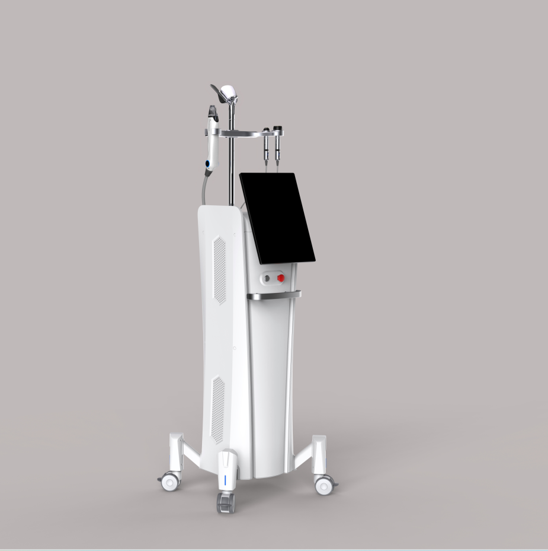

Formovanie postavy:
Pomáha tvarovať postavu tým, že
stimuluje svaly v oblastiach ako brucho, stehná, zadok, ruky či lýtka.
Svaly sa aktivujú podobne ako pri cvičení, čím sa zvyšuje ich
pevnosť.
Redukcia celulitídy:
Podporuje cirkuláciu krvi a lymfy, čo môže prispieť k zníženiu
celulitídy. Pomáha telu s prirodzeným detoxom.
Zlepšenie krvného obehu a mikrocirkulácie:
Stimulácia svalov zlepšuje prietok krvi, čo má pozitívny vplyv na výživu
tkanív a celkový stav pokožky.
Rehabilitácia a regenerácia:
Technológia EMS sa využíva aj v medicíne, najmä pri regenerácii po
zraneniach. Pomáha obnoviť silu svalov a urýchľuje zotavenie.
Omladenie pokožky:
Vďaka lepšiemu prekrveniu a svalovej stimulácii môže terapia prispieť aj
k mladistvejšiemu vzhľadu pokožky – zlepšuje jej pružnosť, štruktúru a
vitalitu.
CO2 Frakčný laser
Ide o pokrokovú estetickú procedúru, pri ktorej sa pomocou jemných
laserových lúčov vytvárajú mikroskopické kanáliky v koži. Tento proces
aktivuje tvorbu nového kolagénu a podporuje prirodzenú obnovu pokožky,
čo má za následok vyhladenie jemných liniek a vrások, zjednotenie
štruktúry pleti a zníženie výskytu jaziev či pigmentových nerovností.
Ošetrenie je mimoriadne efektívne pri rejuvenizácii pokožky a riešení
rôznych dermatologických ťažkostí. Po zákroku sa môže objaviť mierne
začervenanie a šupinatenie kože, ktoré obvykle odznie v priebehu
niekoľkých dní.
Frakčný CO2 laser predstavuje moderné riešenie v oblasti estetických a
gynekologických ošetrení. Špeciálna vaginálna sonda s kĺbovým ramenom a
automatickým otáčaním o 360° umožňuje cielenú stimuláciu tkaniva, čím
podporuje tvorbu kolagénu, obnovu buniek a zlepšenie elasticity
sliznice. Ošetrenie prispieva k spevneniu, hydratácii a celkovej
regenerácii vaginálnej oblasti, čo vedie k vyššiemu komfortu a zlepšeniu
kvality života pacientky.
Vďaka vysokej presnosti zákroku a zabudovaným bezpečnostným prvkom je
táto technológia efektívna a šetrná vo všetkých oblastiach jej využitia
– či už pri estetických zákrokoch alebo pri liečbe intímnych problémov.



Možnosti ošetrenia
- Omladenie pokožky a podpora jej regenerácie
- Vyhladenie vrások a zjednotenie farebného tónu pleti
- Odstraňovanie jaziev po akné, popáleninách, chirurgických zákrokoch či strií
- Spevnenie a zosvetlenie intímnych oblastí (vaginal tightening)
- Riešenie vaginálnej suchosti a zlepšenie prekrvenia sliznice